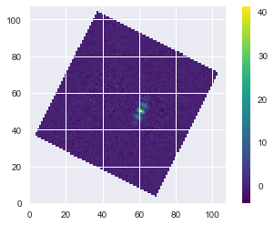
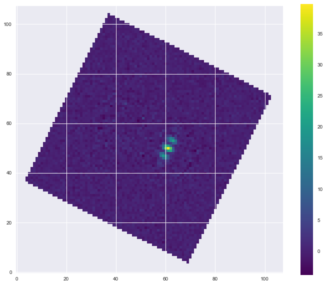
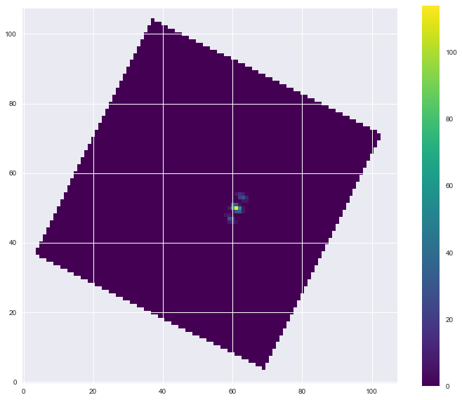
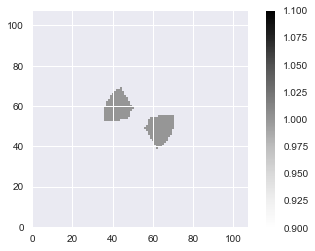
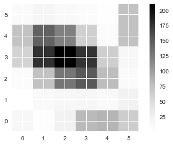
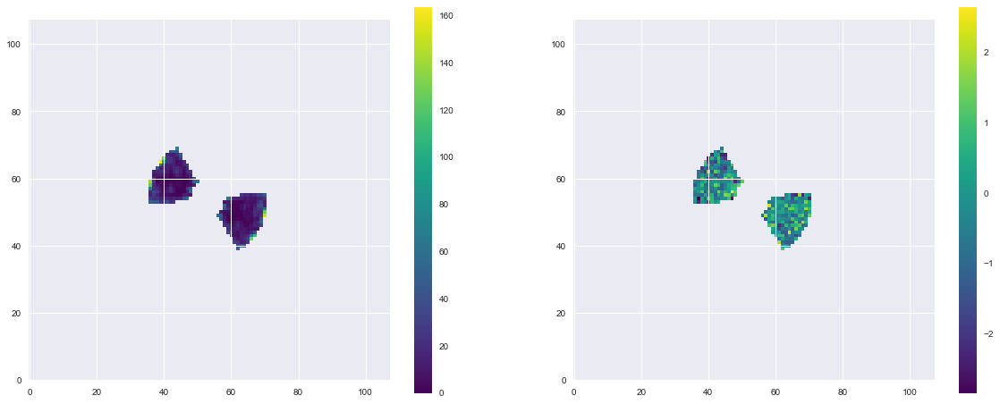

In [221]:
import numpy as np
import scipy.signal
import matplotlib
import matplotlib.animation
import matplotlib.pyplot as plt
import astropy.io.fits as fits
import os
import ipywidgets
import kliplab
import pprint
from matplotlib.colors import LogNorm
from ipywidgets import *
%matplotlib inline
matplotlib.rcParams['image.origin'] = 'lower'
matplotlib.rcParams['image.interpolation'] = 'nearest'
matplotlib.rcParams['axes.linewidth'] = 2
matplotlib.rcParams['lines.linewidth'] = 3.
matplotlib.rcParams['font.size'] = 22
import sys
codefolder = os.path.expanduser('~/WFIRST_tech/crispy')
if codefolder not in sys.path: sys.path.append(codefolder)
import numpy as np
from crispy.tools.initLogger import getLogger
log = getLogger('crispy')
from crispy.params import Params
#codefolder = '../../../crispy'
In [222]:
sys.path.append(os.path.join(codefolder,'crispy'))
sys.path.append(os.path.join(codefolder,'crispy/tools'))
In [223]:
par = Params(codefolder)
from crispy.tools.initLogger import getLogger
log = getLogger('crispy')
from crispy.IFS import polychromeIFS
from crispy.IFS import reduceIFSMap
from crispy.tools.imgtools import scale2imgs,bowtie
from crispy.tools.image import Image
from crispy.tools.rotate import rotateCube,shiftCube
from crispy.tools.postprocessing import mf,recenter_offaxis
from crispy.tools.inputScene import adjust_krist_header
from crispy.tools.detector import averageDetectorReadout
from astropy.io import fits
import astropy.units as u
from crispy.tools.postprocessing import construct_mflib,convolved_mf
In [224]:
%ls
NoNoise 2/ Noisy/ crispy.log
NoNoise.zip Nonoise/ rdi_test_ntz.ipynb
In [225]:
%ls 'NoNoise 2/'
average_ref_star_detector_red_optext_flatfielded.fits
average_target_star_detector_red_optext_flatfielded.fits
average_target_star_nosource_detector_red_optext_flatfielded.fits
In [226]:
%ls 'Noisy/'
average_ref_star_detector_red_optext_flatfielded_trimmean.fits
average_target_star_detector_red_optext_flatfielded_trimmean.fits
average_target_star_nosource_detector_red_optext_flatfielded_trimmean.fits
matched_filter.fits
In [227]:
#use_noise = False
use_noise = True
In [228]:
#ref_star = fits.getdata('Nonoise/average_ref_star_detector_red_optext_flatfielded_trimmean.fits')
#target_star = fits.getdata('Nonoise/average_target_star_nosource_detector_red_optext_flatfielded_trimmean.fits')
#target_star_planet = fits.getdata('Nonoise/average_target_star_detector_red_optext_flatfielded_trimmean.fits')
if use_noise:
ref_star = fits.getdata('Noisy/average_ref_star_detector_red_optext_flatfielded_trimmean.fits')
target_star = fits.getdata('Noisy/average_target_star_nosource_detector_red_optext_flatfielded_trimmean.fits')
target_star_planet = fits.getdata('Noisy/average_target_star_detector_red_optext_flatfielded_trimmean.fits')
else:
ref_star = fits.getdata('NoNoise 2/average_ref_star_detector_red_optext_flatfielded.fits')
target_star = fits.getdata('NoNoise 2/average_target_star_nosource_detector_red_optext_flatfielded.fits')
target_star_planet = fits.getdata('NoNoise 2/average_target_star_detector_red_optext_flatfielded.fits')
matched_filter = fits.getdata('Nonoise/matched_filter.fits')
In [229]:
Nw = ref_star.shape[0]
imh = ref_star.shape[1]
imw = ref_star.shape[2]
In [230]:
planet = target_star_planet - target_star
planet_pos_ind = np.nanargmax(planet[-1,:,:])
xpos_planet = planet_pos_ind % imw
ypos_planet = planet_pos_ind // imh
print("x,y cube pixel planet position: {}, {}".format(xpos_planet, ypos_planet))
x,y cube pixel planet position: 61, 50
In [231]:
print(ref_star.shape)
print(matched_filter.shape)
(19, 108, 108)
(19, 108, 108)
In [232]:
plt.imshow(matched_filter[10], cmap='viridis')
plt.colorbar()
Out[232]:
<matplotlib.colorbar.Colorbar at 0x1143beb00>

In [233]:
plt.imshow(planet[10], cmap='viridis')
plt.colorbar()
Out[233]:
<matplotlib.colorbar.Colorbar at 0x11d965c50>

In [234]:
def plt_cube_slice(wchan):
plt.figure(figsize=(12,10))
plt.imshow(planet[wchan-1,:,:], cmap='viridis')
plt.colorbar()
ipywidgets.interact(plt_cube_slice, wchan=(1,planet.shape[0]));

In [235]:
mf_planet = matched_filter*planet
#true_planet_spectrum = np.nanmax(np.nanmax(mf_planet, axis=2), axis=1)
true_planet_spectrum = np.nansum(np.nansum(mf_planet, axis=2), axis=1)
In [236]:
def plt_cube_slice(wchan):
plt.figure(figsize=(12,10))
plt.imshow(mf_planet[wchan-1,:,:], cmap='viridis')
plt.colorbar()
ipywidgets.interact(plt_cube_slice, wchan=(1,mf_planet.shape[0]));

In [252]:
#IWA = 2.7
#OWA = 8.7
#ang = 60.
IWA = 2.5
OWA = 9.
ang = 65.
lamc = 660.
data_mask, scratch = bowtie(ref_star[0], imw//2-1, imh//2, openingAngle=ang,
clocking=-par.philens*180./np.pi,
IWApix=IWA*lamc/par.lenslet_wav/par.lenslet_sampling,
OWApix=OWA*lamc/par.lenslet_wav/par.lenslet_sampling,
export=None,twomasks=False)
data_ind = np.nonzero(data_mask)
nan_ind = np.nonzero(~data_mask)
N_pix = len(data_ind[0])
N_mask = len(nan_ind[0])
data_mask_nan = np.zeros(data_mask.shape)
data_mask_nan[nan_ind[0][:], nan_ind[1][:]] = np.nan
data_mask_nan[data_ind[0][:], data_ind[1][:]] = True
In [253]:
plt.imshow(data_mask_nan)
plt.colorbar()
Out[253]:
<matplotlib.colorbar.Colorbar at 0x11c5caa90>

In [254]:
plt.imshow(ref_star[3, imh//2-3:imh//2+3, imw//2-3:imw//2+3])
plt.colorbar()
print(ref_star[3, imh//2, imw//2-1])
210.399

In [255]:
masked_ref_star = data_mask_nan*ref_star
masked_target_star = data_mask_nan*target_star
masked_target_star_planet = data_mask_nan*target_star_planet
In [256]:
def plt_ref_target_cube_slices(wchan):
plt.figure(figsize=(20,8))
plt.subplot(121)
plt.imshow(masked_ref_star[wchan-1,:,:], cmap='viridis')
plt.colorbar()
plt.subplot(122)
plt.imshow(masked_target_star_planet[wchan-1,:,:], cmap='viridis')
plt.colorbar()
ipywidgets.interact(plt_ref_target_cube_slices, wchan=(1,mf_planet.shape[0]));

In [257]:
help(bowtie)
Help on function bowtie in module crispy.tools.imgtools:
bowtie(image, xc, yc, openingAngle, clocking, IWApix, OWApix, export='bowtie', twomasks=False)
Creates one or two binary mask for a shaped pupil bowtie mask
Parameters
----------
image: 2D ndarray
Image to which the mask needs to be applied
xc: int
X coordinate of center of bowtie
yc: int
Y coordinate of center of bowtie
openingAngle: float
Angle in degrees representing the opening angle of the bowtie mask
clocking: float
Angle of rotation of the mask in degrees
IWApix: float
Radius in pixels corresponding to the inner working angle of the mask
OWApix: float
Radius in pixels corresponding to the outer working angle of the mask
export: boolean
Whether to export the bowtie or not
twomasks: boolean
If True, returns two masks, one for each side of the bowtie
If False, returns one single mask
Returns
-------
mask: 2D ndarrays of int
Bowtie mask with 1 inside the mask, zero everywhere else.
mask2: 2D ndarrays of int
If twomasks is True, mask and mask2 are the two sides of the bowtie.
In [258]:
plt.figure(figsize=(10,10))
plt.imshow(data_mask)
Out[258]:
<matplotlib.image.AxesImage at 0x11eb107f0>

In [259]:
target_star_vec = target_star[:,data_ind[0],data_ind[1]]
target_star_planet_vec = target_star_planet[:,data_ind[0],data_ind[1]]
ref_star_vec = ref_star[:,data_ind[0],data_ind[1]]
In [260]:
target_star_vec.shape
Out[260]:
(19, 334)
In [261]:
linregress_coeff = np.zeros((Nw, 2))
target_star_est_vec = np.zeros_like(target_star_vec)
target_star_est = np.zeros_like(ref_star)
for wi in range(Nw):
b, a, _, _, _ = scipy.stats.linregress(ref_star_vec[wi,:], target_star_vec[wi,:])
linregress_coeff[wi, 0] = a
linregress_coeff[wi, 1] = b
#target_star_est_vec[wi] = a + b*ref_star_vec[wi]
target_star_est_vec[wi] = b*ref_star_vec[wi]
for ii in range(N_pix):
target_star_est[:, data_ind[0][ii], data_ind[1][ii]] = target_star_est_vec[:,ii]
for ii in range(N_mask):
target_star_est[:, nan_ind[0][ii], nan_ind[1][ii]] = np.nan
In [262]:
plt.plot(linregress_coeff[:,0])
Out[262]:
[<matplotlib.lines.Line2D at 0x11ee00748>]

In [263]:
rdi_planet = target_star_planet - target_star_est
mf_rdi_planet = matched_filter*rdi_planet
#rdi_planet_spectrum = np.nanmax(np.nanmax(mf_rdi_planet, axis=2), axis=1)
rdi_planet_spectrum = np.nansum(np.nansum(mf_rdi_planet, axis=2), axis=1)
In [269]:
plt.figure(figsize=(20,8))
plt.subplot(121)
plt.imshow(target_star_est[0], cmap='viridis')
plt.colorbar()
plt.subplot(122)
plt.imshow(target_star_est[0] - masked_target_star[0], cmap='viridis')
plt.colorbar()
Out[269]:
<matplotlib.colorbar.Colorbar at 0x120243cf8>

In [272]:
plt.figure(figsize=(10,8))
plt.imshow(rdi_planet[-1], cmap='viridis')
plt.colorbar()
Out[272]:
<matplotlib.colorbar.Colorbar at 0x11443b1d0>

In [266]:
plt.figure(figsize=(8,6))
plt.plot(true_planet_spectrum)
plt.plot(rdi_planet_spectrum)
#plt.ylim([0,8])
plt.legend(['Truth','Extracted'])
Out[266]:
<matplotlib.legend.Legend at 0x11f694cc0>

In [267]:
plt.figure(figsize=(8,6))
plt.plot(true_planet_spectrum)
plt.plot(rdi_planet_spectrum)
#plt.ylim([0,8])
plt.legend(['Truth','Extracted'])
Out[267]:
<matplotlib.legend.Legend at 0x11ff28860>

In [268]:
plt.figure(figsize=(8,6))
plt.title('Residual Truth - Extracted')
plt.plot(true_planet_spectrum - rdi_planet_spectrum)
Out[268]:
[<matplotlib.lines.Line2D at 0x11ffdf128>]